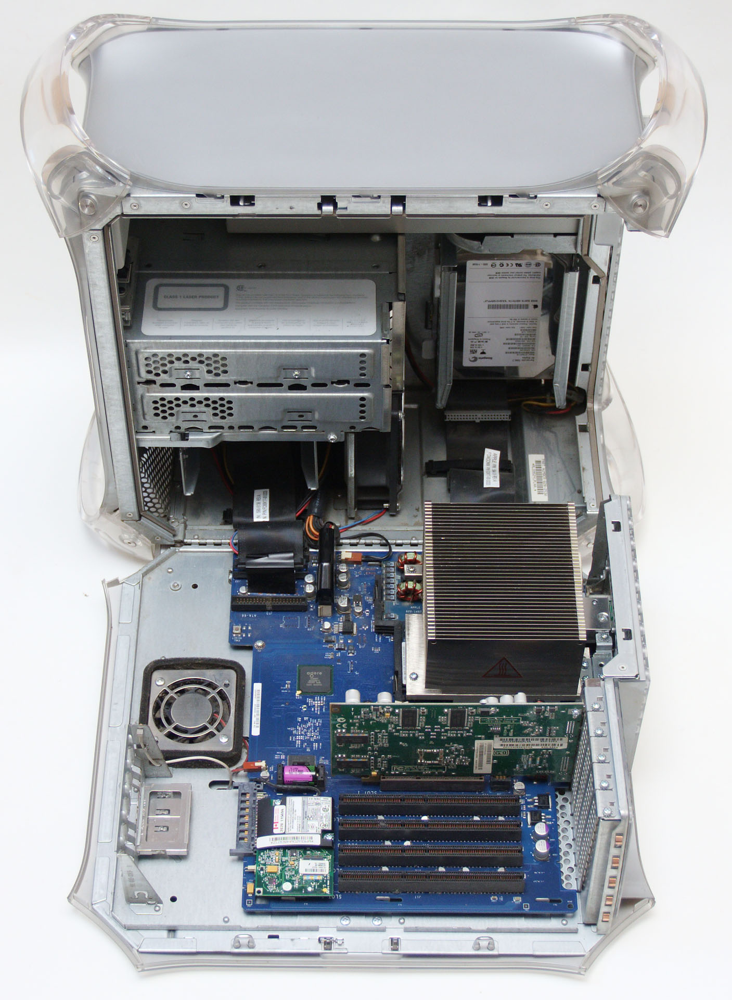

Chassi

Ett Chassie är datorns skal som bestämmer vilka delar man kan använda i datorn, tex ifall man har ett sorts chassie kan man bara använda
datordelar som kan användas i det chassiet.
Ett dator chassi är anpassande till att vara antinge liggande eller stående. De stående brukas kalla för "torn". I början byggdes det flesta chassin i den liggande formen så man skulle kunna ha bildskärmen på den.
Liggande
Desktop
är den bredaste benämningen i stort sett samtilga liggande datorchassin. Det började med XT och AT vilka senare ersattes av ATX.
SFF
står för Small Form Factor. Dessa chassin kan ses som ett mellantingg mellan torn och liggande chassin, eftersom de kan vara ett desktopchassi gjord för både stående och liggande bruk.
Stående
Mini-tower
är den minsta av de stående chassin som vanligen är anpassad för ATX eller dylika moderkort.
Midi-tower
Är kanske det vanligaste datorchassit. Den vanligaste formfaktorn är ATX.
Full-tower
Är den Högsta av de alla. Dessa chassin är oftast anpassade för samtliga typer av moderkort, vilket gör att höjden oftast beror hur många enhetsplatser lådan har.